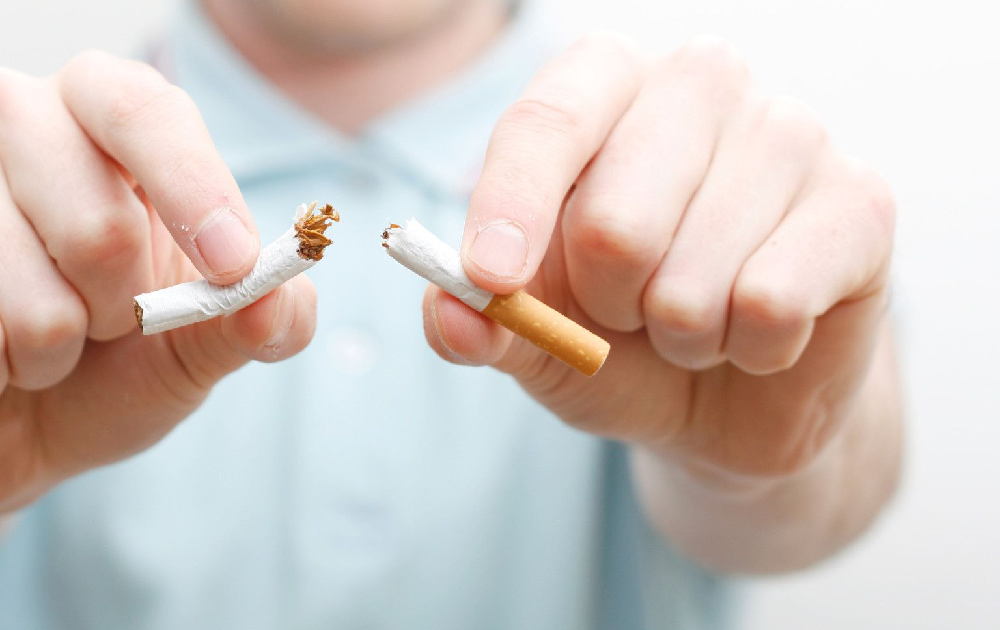
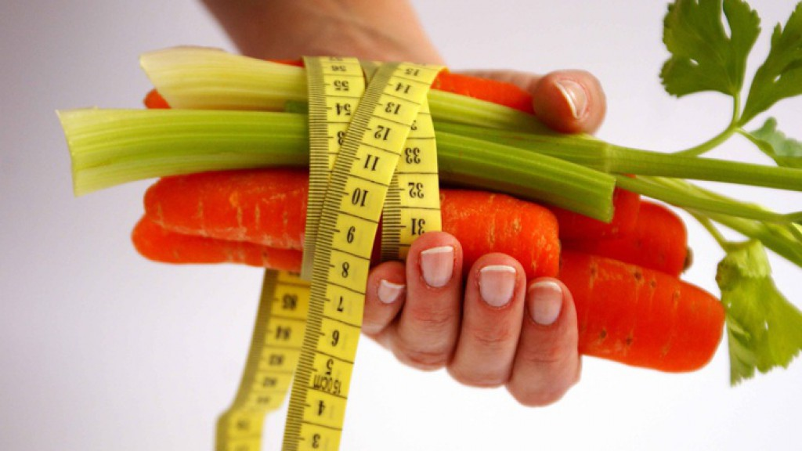
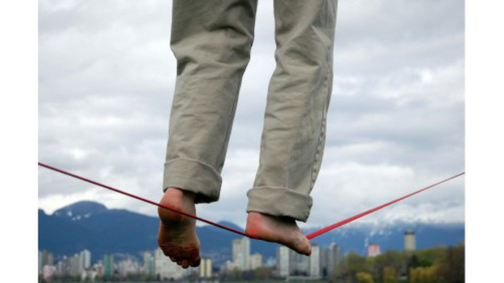
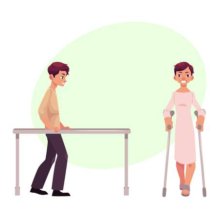

Как улучшить шансы на успешную операцию на позвоночнике

Знаете ли вы, что операция по скреплению позвонков (спондилосинтез) на самом деле не создает костного блока? Операция проводится с целью создания условий для развития костного блока (спондилодеза), и в течение следующих 6-18 месяцев ваш организм должен создать костные клетки, чтобы сформировать новый костный мостик, который пересекает пораженный сегмент позвоночника.
Это сильно отличает спондилосинтез от большинства операций, в которых хирург устраняет патологию к концу операции. При спондилодезе вашему телу фактически приходится выполнять большую часть работы.
Для людей, которые хотят помочь создать самые благоприятные условия для успешного образования костного блока, несколько советов:
Брось курить

На самом деле, бросьте употреблять любые виды никотина, в том числе жевательный табак и сигары. Никотин ранит клетки костного мозга и значительно усложняет процесс образования новых костных клеток, необходимых для формирования костного блока. Многие хирурги, специализирующиеся на хирургии позвоночника, требуют, чтобы их пациенты бросили курить, прежде чем проводить операцию по спондилосинтезу.
Помни о своем весе

Исследования показали, что в группе пациентов с ожирением статистически более длительное время операции и более высокий процент осложнений, поэтому, насколько это возможно, лучше всего попытаться сбросить лишний вес перед операцией.
Попробуй поупражняться перед операцией
Если вы знаете, что через несколько недель или месяцев вам сделают операцию, используйте это время, чтобы постараться прийти в форму как можно раньше. Если вы испытываете сильную боль, это может быть сложно. Но даже небольшое количество физических упражнений и движений лучше, чем ничего. Например, старайтесь ходить по крайней мере 5-10 минут 3-4 раза в день. Вы обнаружите, что ваши усилия окупятся после операции, когда от вас ожидают ежедневной ходьбы в рамках реабилитации. Если у вас возникли трудности, попросите Вашего хирурга прописать лечебную физкультуру перед операцией, чтобы вы могли безопасно заниматься спортом под руководством врача.
Приготовиться к послеоперационным ограничениям

После спондилосинтеза для достижения первой стадии заживления требуется приблизительно 3 месяца. В течение этих первых 3 месяцев необходимо быть осторожным, чтобы избежать действий, которые могут поставить под угрозу костный трансплантат. Эти виды деятельности обычно включают в себя скручивание или сгибание-разгибание нижней части спины или энергичные мероприятия, такие как бег и другие виды спорта.
Примите обязательство по послеоперационной реабилитации

И последнее, но не менее важное, вы должны будете взять на себя обязательство приложить серьезные усилия в реабилитации для того, чтобы ваш позвоночник превратился в месте операции в крепкую твердую кость. Ваша кость сделана из живой ткани, и хорошая физиотерапевтическая программа подвергнет кость стрессу, чтобы она могла вырасти.
Для каждого человека принятие решения об операции на позвоночнике - это большое дело. Спондилосинтез - это обширная операция с довольно длительным периодом заживления. Убедившись, что вы делаете все возможное, чтобы развился хороший костный блок, вы значительно повысите свои шансы уменьшение или устранение боли.